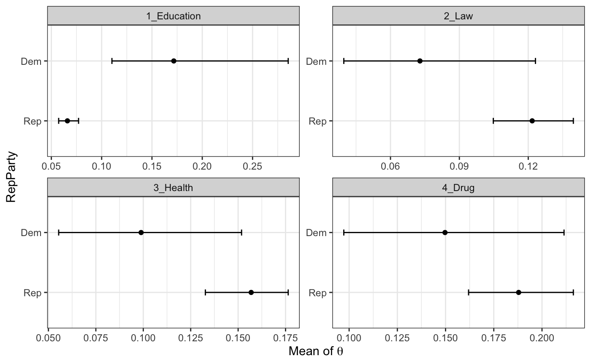

With keyATM covariates, we can calculate the predicted posterior distribution of the document-topic distributions. This is for keyATM Covariate.
out <- keyATM( docs = keyATM_docs, # text input no_keyword_topics = 3, # number of topics without keywords keywords = bills_keywords, # keywords model = "covariates", # select the model model_settings = list(covariates_data = bills_cov, covariates_formula = ~ RepParty), options = list(seed = 250) )
Now let’s calculate the mean of theta for two different values of RepParty. The figure shows 90% credible intervals.
strata_topic <- by_strata_DocTopic(out, by_var = "RepParty", labels = c("Dem", "Rep")) summary(strata_topic)
## [[1]]
## # A tibble: 7 x 7
## Topic Lower Point Upper TopicId val label
## <chr> <dbl> <dbl> <dbl> <int> <dbl> <chr>
## 1 1_Education 0.110 0.172 0.285 1 -1.26 Dem
## 2 2_Law 0.0397 0.0728 0.123 2 -1.26 Dem
## 3 3_Health 0.0554 0.0989 0.152 3 -1.26 Dem
## 4 4_Drug 0.0972 0.150 0.211 4 -1.26 Dem
## 5 Other_1 0.0518 0.0985 0.173 5 -1.26 Dem
## 6 Other_2 0.147 0.218 0.310 6 -1.26 Dem
## 7 Other_3 0.0922 0.160 0.238 7 -1.26 Dem
##
## [[2]]
## # A tibble: 7 x 7
## Topic Lower Point Upper TopicId val label
## <chr> <dbl> <dbl> <dbl> <int> <dbl> <chr>
## 1 1_Education 0.0573 0.0660 0.0770 1 0.790 Rep
## 2 2_Law 0.105 0.122 0.140 2 0.790 Rep
## 3 3_Health 0.133 0.157 0.176 3 0.790 Rep
## 4 4_Drug 0.162 0.188 0.216 4 0.790 Rep
## 5 Other_1 0.0284 0.0384 0.0530 5 0.790 Rep
## 6 Other_2 0.269 0.298 0.325 6 0.790 Rep
## 7 Other_3 0.114 0.130 0.150 7 0.790 Rep
out <- keyATM( docs = keyATM_docs, # text input no_keyword_topics = 3, # number of topics without keywords keywords = bills_keywords, # keywords model = "base", # base, covariates, or dynamic options = list(seed = 250), keep = c("Z", "S") # You need to keep `Z` and `S` )
We have a binary variable of the party ID of bill’s proposer. 0 indicates Democrat and 1 indicates Republican.
bills_cov <- keyATM_data_bills$cov table(bills_cov[, "RepParty"])
##
## 0 1
## 54 86by_strata_TopicWord() function calculates topic-word distribution subsetted by a vector provided.
RepParty <- as.vector(bills_cov[, "RepParty"]) # the length should be the same as the number of documents strata_tw <- by_strata_TopicWord(out, keyATM_docs, by = RepParty)
You can get top words with top_words().
top_words(strata_tw, n = 5)
## $`0`
## 1_Education 2_Law 3_Health 4_Drug Other_1 Other_2
## 1 grant action public [✓] drug [✓] research facility
## 2 education [✓] law [✓] health [✓] describe technology follow
## 3 local person veteran date director end
## 4 school enforcement care person national amendment
## 5 library juvenile tax application development establish
## Other_3
## 1 project
## 2 center
## 3 management
## 4 national
## 5 rare
##
## $`1`
## 1_Education 2_Law 3_Health 4_Drug Other_1 Other_2 Other_3
## 1 education [✓] law [✓] public [✓] date electronic follow national
## 2 school court [✓] health [✓] report director end wildlife
## 3 educational action care describe information amendment system
## 4 grant code medical drug [✓] national congress land
## 5 local district veteran day technology amended refugeAs long as the length is the same as the number of documents, you can use a character vector for by argument argument.
RepParty_chr <- ifelse(bills_cov[, "RepParty"] == 0, "Democrat", "Republican") strata_tw_chr <- by_strata_TopicWord(out, keyATM_docs, RepParty_chr) top_words(strata_tw_chr, n = 3)
## $Democrat
## 1_Education 2_Law 3_Health 4_Drug Other_1 Other_2 Other_3
## 1 grant action public [✓] drug [✓] research facility project
## 2 education [✓] law [✓] health [✓] describe technology follow center
## 3 local person veteran date director end management
##
## $Republican
## 1_Education 2_Law 3_Health 4_Drug Other_1 Other_2 Other_3
## 1 education [✓] law [✓] public [✓] date electronic follow national
## 2 school court [✓] health [✓] report director end wildlife
## 3 educational action care describe information amendment system